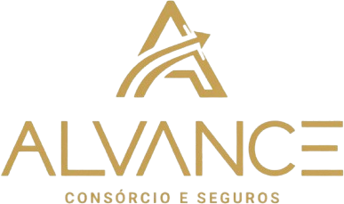

01
↗
Arquitetura de IA
Agentes que atendem, qualificam, distribuem e acompanham oportunidades 24 horas por dia.
O ELO INTELIGENTE DO SEU ECOSSISTEMA
Arquitetamos operações comerciais de alta performance com inteligência artificial, CRM, automação, tráfego e conteúdo — todos trabalhando como um só sistema.
IA · CRM · SDR · ADS · DADOS — EM UMA ÚNICA OPERAÇÃO
Marcas e operações que já rodam com a ARVISX

Não entregamos ferramentas soltas. Construímos sistemas que vendem.
O QUE A ARVISX CONSTRÓI
Não existe crescimento sustentável quando marketing, atendimento e vendas trabalham separados. A ARVISX conecta atenção, dados e execução para nenhum lead ficar sem resposta, proposta ou acompanhamento.
Agentes que atendem, qualificam, distribuem e acompanham oportunidades 24 horas por dia.
O caminho completo do lead até a assinatura, com visibilidade para escalar sem perder controle.
Prospecção, cadência e agendas organizadas para o seu time conversar com a pessoa certa, na hora certa.
Propostas, follow-up, pós-venda e tarefas operacionais executados com consistência.
Criativos, anúncios, blogs e redes sociais que alimentam o funil — não apenas alcance.
Indicadores e testes contínuos para transformar investimento em aquisição previsível.
UM ÚNICO ECOSSISTEMA
Conectamos canais, dados e pessoas para que cada oportunidade avance com velocidade, contexto e consistência.
Quero estruturar minha operação ↗AGENTES DE INTELIGÊNCIA ARTIFICIAL
Não é só um chatbot. A ARVISX implementa agentes especializados que executam as etapas reais do seu comercial e sustentam a operação do escritório ou empresa de ponta a ponta.
Responde WhatsApp, Instagram e landing pages em segundos, entende a intenção e coleta os dados certos.
CANAL → CRM → PRÓXIMA AÇÃOAplica os critérios da empresa, identifica urgência e encaminha cada oportunidade para a jornada correta.
CANAL → CRM → PRÓXIMA AÇÃOConsulta disponibilidade, confirma presença, reduz faltas e entrega ao consultor uma conversa contextualizada.
CANAL → CRM → PRÓXIMA AÇÃOAciona a proposta adequada, organiza aprovações e mantém follow-ups ativos sem deixar negociações esfriarem.
CANAL → CRM → PRÓXIMA AÇÃOLembra vencimentos, direciona links de pagamento e sinaliza pendências para o time financeiro.
CANAL → CRM → PRÓXIMA AÇÃOAtualiza o Kommo, distribui tarefas, acompanha etapas e transforma o processo comercial em dados de gestão.
CANAL → CRM → PRÓXIMA AÇÃOECOSSISTEMA QUE ACELERAMOS
Marcas e operações do nosso ecossistema que usam estratégia, criatividade e tecnologia para ganhar clareza e velocidade.
COMO FAZEMOS
Mapeamos gargalos, oferta, canais e o percurso comercial atual.
Definimos jornadas, mensagens, automações e indicadores.
Conectamos CRM, WhatsApp, Instagram e o seu ecossistema.
Otimização com dados, testes e acompanhamento estratégico.
CONHECIMENTO QUE GERA DEMANDA
Descubra como marketing, conteúdo, tráfego e funil se unem para gerar vendas com previsibilidade.
Ler o Guia de Funil de Vendas ↗PRONTO PARA EVOLUIR?
Vamos identificar o gargalo que impede a sua operação de crescer — e desenhar o próximo passo.
Solicitar diagnóstico estratégico ↗ ARVISX AI • AUTOMAÇÃO • IA • CRESCIMENTO